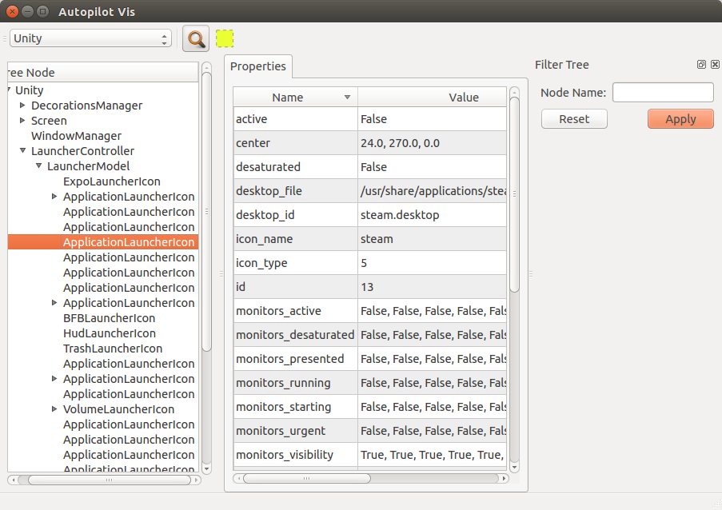

Running Autopilot¶
Autopilot test suites can be run with any python test runner (for example, the built-in testtools runner). However, several autopilot features are only available if you use the autopilot runner.
List Tests¶
Autopilot can list all tests found within a particular module:
$ autopilot3 list <modulename>
where <modulename> is the base name of the module you want to look at. The module must either be in the current working directory, or be importable by python. For example, to list the tests inside autopilot itself, you can run:
$ autopilot3 list autopilot
autopilot.tests.test_ap_apps.GtkTests.test_can_launch_qt_app
autopilot.tests.test_ap_apps.QtTests.test_can_launch_qt_app
autopilot.tests.test_application_mixin.ApplicationSupportTests.test_can_create
autopilot.tests.test_application_mixin.ApplicationSupportTests.test_launch_raises_ValueError_on_unknown_kwargs
autopilot.tests.test_application_mixin.ApplicationSupportTests.test_launch_raises_ValueError_on_unknown_kwargs_with_known
autopilot.tests.test_application_mixin.ApplicationSupportTests.test_launch_with_bad_types_raises_typeerror
autopilot.tests.test_application_registration.ApplicationRegistrationTests.test_can_register_new_application
autopilot.tests.test_application_registration.ApplicationRegistrationTests.test_can_unregister_application
autopilot.tests.test_application_registration.ApplicationRegistrationTests.test_registering_app_twice_raises_KeyError
autopilot.tests.test_application_registration.ApplicationRegistrationTests.test_unregistering_unknown_application_raises_KeyError
...
81 total tests.
Some results have been omitted for clarity.
The list command takes only one option:
| -ro, --run-order | |
| Display tests in the order in which they will be run, rather than alphabetical order (which is the default). | |
Run Tests¶
Running autopilot tests is very similar to listing tests:
$ autopilot3 run <modulename>
However, the run command has many more options to customize the run behavior:
| -h, --help | show this help message and exit |
| -o OUTPUT, --output OUTPUT | |
| Write test result report to file. Defaults to stdout. If given a directory instead of a file will write to a file in that directory named: <hostname>_<dd.mm.yyy_HHMMSS>.log | |
| -f FORMAT, --format FORMAT | |
| Specify desired output format. Default is “text”. Other option is ‘xml’ to produce junit xml format. | |
| -r, --record | Record failing tests. Required ‘recordmydesktop’ app to be installed. Videos are stored in /tmp/autopilot. |
- -rd PATH, –record-directory PATH
- Directory to put recorded tests (only if -r) specified.
| -v, --verbose | If set, autopilot will output test log data to stderr during a test run. |
Common use cases¶
Run autopilot and save the test log:
$ autopilot3 run -o . <modulename>
Autopilot will create a text log file named <hostname>_<dd.mm.yyy_HHMMSS>.log with the contents of the test log.
Run autopilot and record failing tests:
$ autopilot3 run -r --rd . <modulename>
Videos are recorded as ogg-vorbis files, with an .ogv extension. They will be named with the test id that failed. All videos will be placed in the directory specified by the-rdoption - in this case the currect directory. If this option is omitted, videos will be placed in/tmp/autopilot/.
Save the test log as jUnitXml format:
$ autopilot3 run -o results.xml -f xml <modulename>
The file ‘results.xml’ will be created when all the tests have completed, and will be in the jUnitXml file format. This is useful when running the autopilot tests within a jenkins environment.
Launching an Application to Introspect¶
In order to be able to introspect an application, it must first be launched with introspection enabled. Autopilot provides the launch command to enable this:
$ autopilot3 launch <application> <app_parameters>
The <application> parameter could be the full path to the application, or the name of an application located somewhere on $PATH. <app_parameter> is passed on to the application being launched.
A simple Gtk example to launch gedit:
$ autopilot3 launch gedit
A Qt example which passes on parameters to the application being launched:
$ autopilot3 launch qmlscene my_app.qml
Autopilot launch attempts to detect if you are launching either a Gtk or Qt application so that it can enable the correct libraries. If it is unable to determine this you will need to specify the type of application it is by using the -i argument. This allows “Gtk” or “Qt” frameworks to be specified when launching the application. The default value (“Auto”) will try to detect which interface to load automatically.
A typical error in this situation will be “Error: Could not determine introspection type to use for application”. In which case the -i option should be specified with the correct application framework type to fix the problem:
$ autopilot3 launch -i Qt address-book-app
Once an application has launched with introspection enabled, it will be possible to launch autopilot vis and view the introspection tree, see: Visualise Introspection Tree.
Visualise Introspection Tree¶
A very common thing to want to do while writing autopilot tests is see the structure of the application being tested. To support this, autopilot includes a simple application to help visualize the introspection tree. To start it, make sure the application you wish to test is running (see: Launching an Application to Introspect), and then run:
$ autopilot3 vis
The result should be a window similar to below:

Selecting a connection from the drop-down box allows you to inspect different autopilot-supporting applications. If Unity is running, the Unity connection should always be present. If other applications have been started with the autopilot support enabled, they should appear in this list as well. Once a connection is selected, the introspection tree is rendered in the left-hand pane, and the details of each object appear in the right-hand pane.
Autopilot vis also has the ability to search the object tree for nodes that match a given name (such as “LauncherController”, for example), and draw a transparent overlay over a widget if it contains position information. These tools, when combined can make finding certain parts of an application introspection tree much easier.